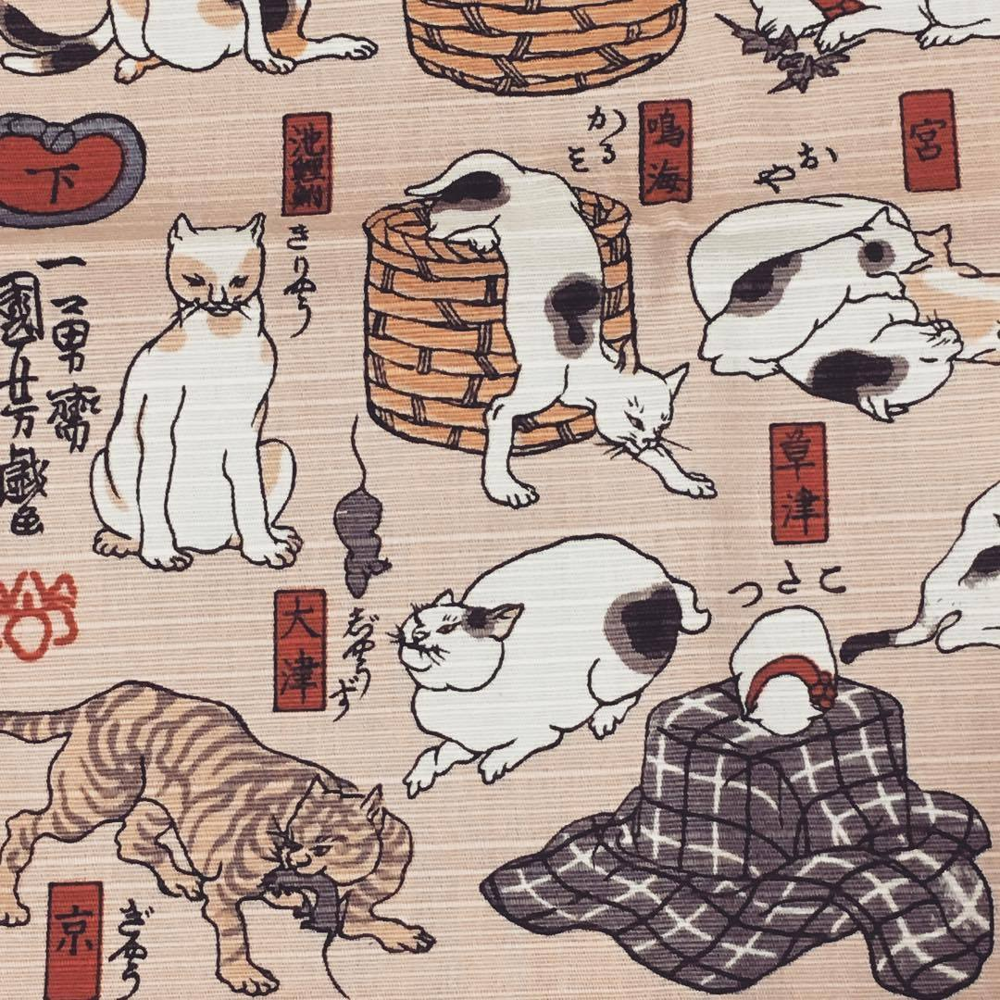
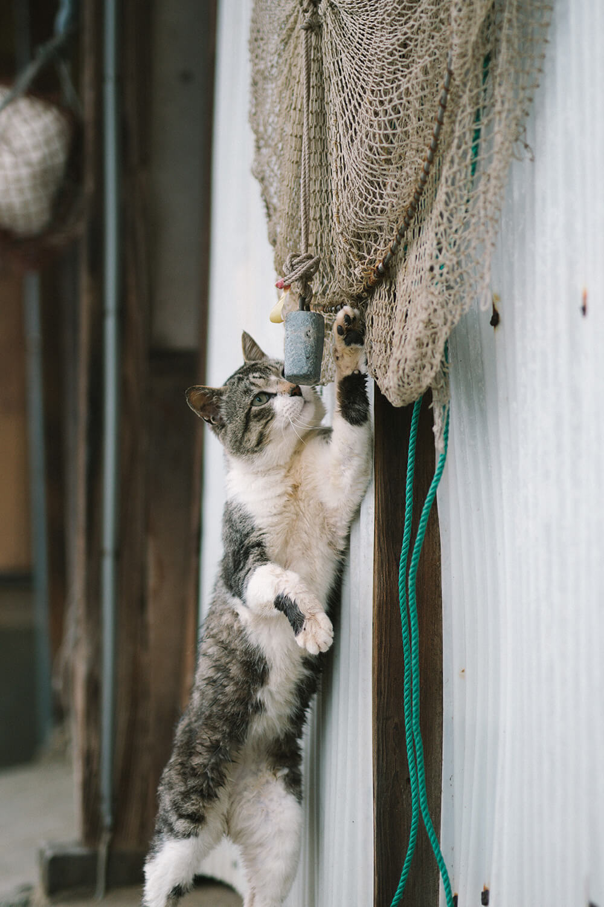
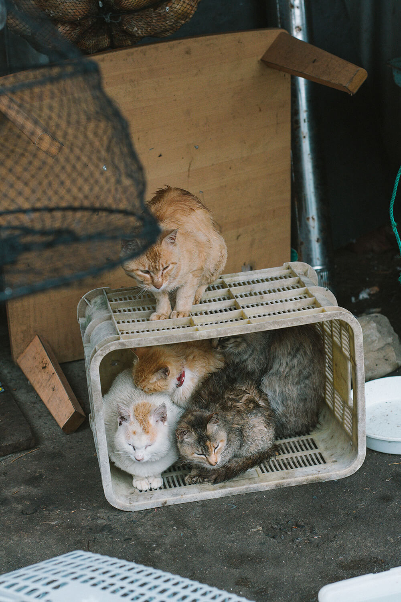
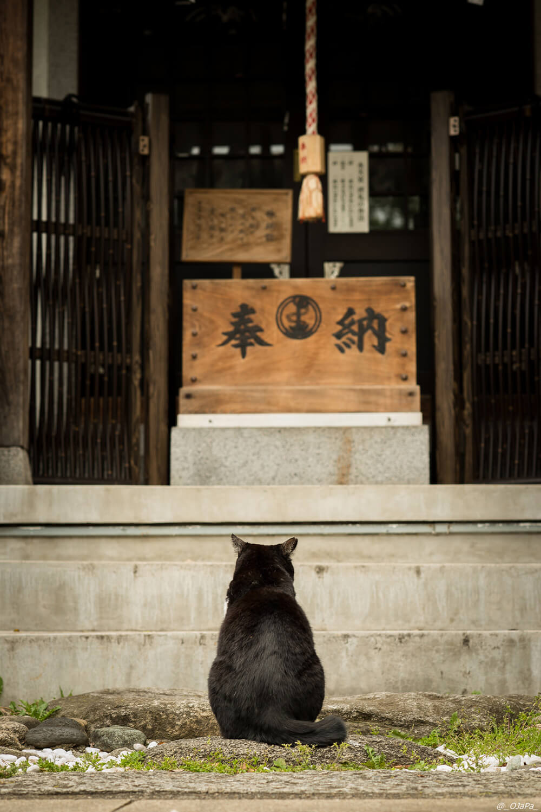

<!DOCTYPE html>
<html lang="en">
<head>
    <meta charset="UTF-8">
    <meta name="viewport" content="width=device-width, initial-scale=1.0">
    <meta http-equiv="X-UA-Compatible" content="ie=edge">
    <link rel="stylesheet" href="css/styles.css">
    <!-- google fonts -->
    <link rel="preconnect" href="https://fonts.googleapis.com">
    <link rel="preconnect" href="https://fonts.gstatic.com" crossorigin>
    <link href="https://fonts.googleapis.com/css2?family=Hepta+Slab:wght@300;400;500&family=JetBrains+Mono:ital,wght@0,100;0,200;1,100;1,200&display=swap" rel="stylesheet">
    <!-- fontawesome -->
    <script src="https://kit.fontawesome.com/bb64da5fe1.js" crossorigin="anonymous"></script>
    <!-- FancyBox -->
    <link rel="stylesheet" href="https://cdn.jsdelivr.net/gh/fancyapps/fancybox@3.5.7/dist/jquery.fancybox.min.css" />
    <!-- TinySlider -->
    <link rel="stylesheet" href="https://cdnjs.cloudflare.com/ajax/libs/tiny-slider/2.9.2/tiny-slider.css">
    <!--[if (lt IE 9)]><script src="https://cdnjs.cloudflare.com/ajax/libs/tiny-slider/2.9.2/min/tiny-slider.helper.ie8.js"></script><![endif]-->

    <title>portfolio-2022</title>
    <meta name="format-detection" content="telephone=no" />
</head>

<body>
    <!-- <header>
      <div>
        <section id="logo-1-container"><a href="index.html">
            <h5>cats<br>of<br>japan</h5>
          </a></section>
    
        <section id="burger-container">
          <svg xmlns="http://www.w3.org/2000/svg" viewBox="0 0 32 26" id="burger">
            <g id="Symbols" stroke="none" stroke-width="1" fill="none" fill-rule="evenodd" stroke-linecap="round"
              stroke-linejoin="round">
              <g id="lines" stroke="#000" stroke-width="3">
                <g id="arrow-down" transform="translate(4 12.5)">
                  <path id="arrow-down-left" d="M0 .5h9.667" />
                  <path id="arrow-down-right" d="M0 .5h9.667" />
                </g>
                <g id="arrow-up" transform="translate(18 12.5)">
                  <path id="arrow-up-left" d="M0 .5h9.667" />
                  <path id="arrow-up-right" d="M0 .5h9.667" />
                </g>
                <path class="lines" id="topline" d="M4 4h24" />
                <path class="lines" id="middleline" d="M4 13h24" />
                <path class="lines" id="bottomline" d="M4 22h24" />
              </g>
            </g>
          </svg>
    
        </section>
        <section id="logo-2-container"><a href="btn.html"></a></section>
      </div>
    </header> -->

    <!-- <nav id="main-nav">
            
            <div>
                <ul>
                    <li class="show-nav-button hide-nav-button"><button id="culture-btn">Culture</button></li>
                    <li class="show-nav-button hide-nav-button"><button id="art-btn">Art</button></li>
        
        
                    <li class=" hide-nav-button">
                        <a href="index.html#home-culture">Culture</a>
                    </li>
                    <li class=" hide-nav-button">
                        <a href="index.html#home-art">Art</a>
                    </li>
        
                    <li>
                        <a href="gallery.html">A Day In The Life</a>
                    </li>
                    <li>
                        <a href="blog.html">Monthly Topic</a>
                    </li>
                    <li>
                        <a href="insta.html">Cat Celebs</a>
                    </li>
                    <li>
                        <a href="contact.html">When In Japan</a>
                    </li>
                </ul>
            </div>
        
        
        </nav> -->
    
    <!-- 
    <section id="home-hero-container" class="hero-container">
        <div id="home-hero">
            <h1 class="page-title">cats<br>of<br>japan</h1>
            <h5 class="japn">さくらねこ</h5>
        </div>
    </section>
    
    <section class="hero-container">
            <div id="home-intro">
                <div>
                    <p class="content-spacing caption">
                        A site for anyone who want to learn more about Japan’s love for cats.
                    </p>
                </div>
            </div>
    </section>
    <section class="scroll-animation">
        <section class="hero-container">
            <div>
                <ul id="home-intro-img">
                    <li id="img1">
                        <a data-fancybox="home" href="img/home/home-1.jpeg"></a>
                    </li>
                    <li id="img2" class="show-for-md">
                        <a data-fancybox="home" href="img/home/home-2.jpeg"></a>
                    </li>
                </ul>
                <h1 id="intro">intro</h1>
                <ul id="home-intro-p" class="content-spacing">
                    <li>
                        <p class="index-caption home-intro-anim">
                            Cats are often the stuff of legend – they embody mysti&shy;cism. It is no wonder that cats have been
                            culturally significant for many nations. Their relation&shy;ship with and influence on humans is as
                            old as civilization itself and can be traced back to over <span class="bold">9,500 years</span>.
                        </p>
                    </li>
                    <li id="img3">
                        <a data-fancybox="home2" href="img/home/home-2.jpeg"></a>
                    </li>
                    <li>
                        <p class="home-intro-anim">In Japan, cats are revered for giving good luck and other positive results. The popular Japanese cat
                            figurine maneki-neko (<span class="japanese">招き猫</span>, “beckoning cat”) is typically believed to
                            bring such blessings.</p>
                    </li>
                </ul>
            </div>
        </section>
        <section id="home-culture" class="hero-container">
            <div id="home-culture-container">
                <h1 id="culture">cul-<br>ture</h1>
                <div id="culture-bg"></div>
                    <a data-fancybox="home3" href="img/home/home-3.jpeg"></a>
                <div id="home-culture-para">
                    <p class="index-caption" id="home-culture-anim">
                        Japan’s history indicates that cats have played an important role in Japanese culture and society, hence
                        the number of shrines and temples dedicated to cats in the country.
                    </p>
                    <div class="button-container">
                        <a class="button" href="gallery.html">MORE IMAGES</a>
                    </div>
                </div>
            </div>
        </section>
        <section id="home-art" class="hero-container content-spacing">
            <div>
                <p class="index-caption" id="home-art-anim">
                    Throughout Tokyo and Japan, there is also an extensive collection of art that includes cats.
                </p>
                <h1 id="art">
                    art
                </h1>
                <div class="button-container">
                    <a class="button" href="blog.html">SEE THIS MONTH POST</a>
                </div>
            </div>
        </section>
    </section> -->
    <footer>
            <div id="footer-container">
                <div id="left-footer">
                    <p>
                        thank you for visiting < 3
                        madeline nguyen © 2022
                    </p>
                </div>
                <div id="right-footer">
                    <ul>
                        <li>instagram</li>
                        <li>behance</li>
                        <li>linkedin</li>
                    </ul>
                </div>
            </div>
        </footer>
    
            
            
            <script src="js/scripts-min.js" type="module"></script>
            
            
            
            
            
</body>

</html>